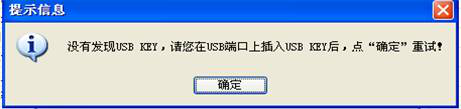

- 问题：用户在使用办税通报税时，上传申报数据或划款时提示请插入USB-KEY。

- 可能由以下原因引起：
- 1、没有正确安装数字证书驱动程序及根证书；
- 解决办法：安装相应的数字证书驱动及根证书。
- 2、数字证书刚插到USB接口上，就点击申报或划款；
- 解决办法：在数字证书接到USB口后，等一会后再进行操作。
- 3、数字证书中没有企业的地税号码或地税号码与报税软件中的企业地税号码不一致；
- 解决办法：检查数字证书是否为地税报税专用（可能为其他项目数字证书）；
- 需用户判断报税软件的地税号码和数字证书的地税号码哪一个是正确的，
- 从而来确定是否需要更新数字证书的地税号码，
- 如需更改税号，及时与当地服务中心联系。
- 4、USB-KEY或USB口损坏。
- 解决办法：检查USB－KEY灯是否亮，或换其他USB接口一试，或换其他电脑看是否能认出新硬件。